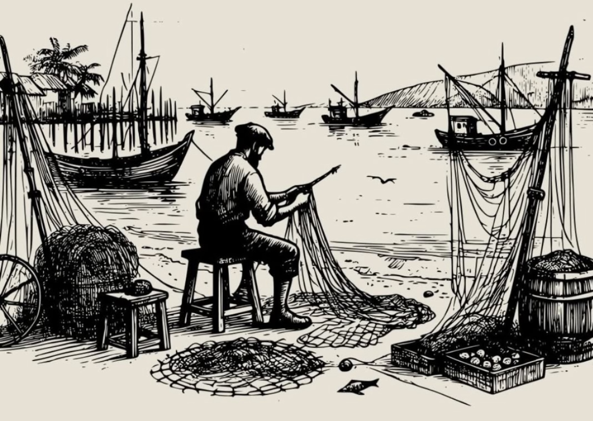

for the longest time, i've had this theory brewing in my head about nice vs good. they aren't the same thing when you're labelling a person, but instead, we use them as synonyms
nice people are imprisoned by perception. they're slaves to others' opinions > their own reality. bound by society's definition of what's right. grew up being told what they should do. lack agency, so depend on others. they need constant validation & direction bcs they can't shape their own path, let alone shaping the world. these are the ones who keep asking for accountability partners, because they're weak & don't want it badly enough. you'll see nice people everywhere in every industry. shut your eyes & you'll get a face in your mind for sure.
nice people are scared af of hurting others. but then there's the backwards law: the more u try to not hurt people, the more people u end up hurting. they will leave a trail of hurt behind bcs they never understood this simple truth.
good people tho? they've figured their shit out.
• they can say no (& sleep peacefully after)
• they have agency (don't need validation to breathe)
• they serve themselves first (sounds selfish? good.)
• they're secure in who they are (no fake personalities)
• they know their priorities (& stick to them)
when good people help others, it comes from a real place. not from some desperate need to be perceived well. they do it bcs they want to, not bcs they have to.
i used to be nice. they has been me. it's a by-product of conditioning, childhood & fight/flight decisions you make everyday. things changed when i went into an exile for 2 weeks. i death-stared my fear, conditioning & violence inside. i started serving myself first. i & i alone, am responsible for how i think & feel. no matter how betrayed, guilty, or heartbroken i feel - it's on me. you'll see the difference when you either observe closely, or leave the nice-land.
being nice is a curse. being good is freedom. pick your poison.
my quest to sanity had an insane tussle b/w finding semblance between our insignificance with knowledge that i'm 1/8,00,00,000 humans vs the belief that I'm different. the isolation of self from all humans makes us believe we're different (function of a strong ego). in this tussle, it soon turned out, that it's because my consciousness was the only one i knew, so isolating myself from the world was a by-product of the conditioning society grows u up in. and that there was nothing wrong with it. holons; a whole and a part of a collective consciousness. that's what we all are.
after a while of taking myself far too seriously, i answered: yes. i'm insignificant and will continue to be. i won't amount to much. no matter how hard i try. everybody forgets. everybody comes alone & dies alone. naked. comes with no possession & goes with none. legacy of 'self' is again, an illusion. you won't have as big an impact on humanity as you grew up thinking. and that's the honest reality. solopreneurship is a cope for easy wi-fi money and a mid life. even if there's money and supposed "freedom".
but, your work can. if you surrender to the act of it, and not what it can get you. it's naturally quite hard, because we grew up exclusively chasing outcomes (marks, a college / branch, a placement et al). but that killed me. freedom was in the act, not the reward.
sanity was found when i realised that you've to take your work seriously & not yourself! it's a common advice that takes far too long to get a grip around. that my work can amount to a lot. that your work will last far, far longer than you. contributing to a mission that's larger than feeding goals of self (which are mostly materialistic: social relevance, wealth, security, identity) is far more fulfilling to any human being alive (certain about this)
kill out ambition. ambition is the first curse: the great tempter of the man who is rising above his fellows. it is the simplest form of 'looking' for a reward. to work for self is to work for disappointment. work as those work who are ambitious. seek in the heart the source of evil and expunge it. only the strong can kill it out. the weak must wait for its growth, its fruition, its death. but by then, the coffee gets cold.
note to reader: read karma yoga & light on the path.
half a decade into surfing & studying from the internet, i've now learnt that curiosity is about depth, not breadth. breadth is shallow (in 99% of cases, barring outliers). curiosity is also an illusion. much like agency, smartness, and intelligence. most of us started associating with these words bcs our 9th grade teacher told us so, or our friends who'd call us these to make us feel better when we're down.
we took their presence rather seriously in us without ever questioning what it truly means to have it. u could live in this illusion all your life and die a happy man. ignorance is indeed, bliss. if you are so smart, why aren't you so rich? if you're so curious, why don't you write deep dives & papers? if you're so intelligent, why don't you have ONE innovative project to show for your 'intelligence'?
just bcs u read a cool paper/report that landed on your feed and has a shmexy headline doesn't make u curious. neither is having a smart yt feed. these are all games of cheap dopamine; to make you believe you are something that you aren't (hi Duolingo).
it's about the hours you've willingly put in diving deep to understand that word or concept you read in that shmexy-sounding article / yt video. and how well u truly understood it. whether you can eli5 it. question your depth, anon. you'll realise not only you, but most of the world around you is shallow. it's a world of pretence.
oh and yeah, my writing this is also pretentious. i'm neither curious nor smart or intelligent. i dropped believing that a year ago. when i truly understood their functions (and how they affect outcomes).

when the sea is too rough to sail, the smart ones don't wait— they get to work. they mend their nets, sharpen their tools, and prepare for the moment the storm breaks. because even in stillness, there's progress. it's not about sitting idle; it's about building what's next.
the idea of money occupies me very very often, as i observe where my dopamine, delight & misery arrives from, i often find money to be a deep source of misery, instability, insecurity, desperation or day dreaming. weeks & months worth of dialogue have been put in trying to rationalise my history with money, to better change it
a million different ways to make a million, none better than the other, because money is a commodity. it doesn't think or care or feel anything about you. it has no emotions. maybe the right way to look at money, is to look at it without emotions too. with equanamity. profit/loss both are inevitable. money is electricity, an energy. let it pass through you. do not dream of hoarding it. the more i tried hoarding it, the more sour it got, the more dissonance i found with the divine energy of my reality.
growing up, money was not only scarce, but instead, a demon. i saw fights, violence, anger & disrespect for a couple of thousands (sometime, much lesser). i saw it break trust, love & happiness. as much as i despised it, i wasn't awake to make a conscious choice of breaking that pattern. i looked it as the underlying theme to life; beyond happiness & love. it was attached to your self-worth & your character. i looked upon all my friends & their families with abundance of wealth, i often looked down at mine. money was only an excuse to look down upon them, there were issues far deep seeded than scarcity of money only triggered. my earliest memory remains of surrendering to illicit ways to acquiring money or a commodity. mom's purse, a chocolate from the supermarket. it always starts small.
fast forward to a few years: only to realise that all of this dismantled my character in entirety. a mindset shift arrived when life was dull for a year; not only on money, but on the meta of how i was living life wrong. money is a sub-energy. a greater energy drives life; it drives healthy relationships, discipline, wealth, purpose — you get the jig. you have one, you can likely get all. the answer can cross-pollinate. i struggle to articulate this answer in words — if you've got 3 hours & i like you, you may find sense in ~30mins of words i tie together
you've to first be rich mentally, in realms above reality (cause) to let it crop in your physical realm (effect). you can't win if you don't play, so don't forget that you have to be playing constantly, manifesting is bullshit if you're on your couch all day long.
money is a commodity, that exists in abundance. billions of dollars of value created everyday. although money requires definite discipline. society will judge how u make ur wealth. how you make your money will also build character. but a dollar is a dollar. it serves the same purpose. as long as u can go sleep peacefully at night with a clear conscience, nothing else matters. you won't get rich renting your time, that's for sure. i promised myself to not to sign up for a consulting gig even when i'm completely free — for then i'm again, a slave to the 1st of the month. u need to believe in asymmetric opportunities & actually put your money where your mouth is. in every action u do. slowly then suddenly. you have to pay the price to educate yourself in business, content, friends etc (all different kinds of wealth: money, fame, appreciation, relationships). although attention (fame) is limited, wealth is unlimited. money is ironically a positive sum play. just like happiness & love. we can all be happy wealthy & full of love in a utopian era.
i say these things as someone who is nor privileged, nor wealthy, nor having made the right decisions in life around money & people. but now i'm starting to see why. the backwards law by alan watts. the idea that the more you pursue feeling better all the time, the less satisfied you become, as pursuing something only reinforces the fact that you lack it in the first place. the more you desperately want to be rich, the more poor and unworthy you feel, regardless of how much money you actually make.
it brings misery. happiness doesn't require money. happiness also trumps wealth & fame (which are features of the matrix).
as i was telling ips today, it's only worthwhile to see through the game if you can win & then retire, to sound smart & still be broke is a second hand man's game.
functioning from a constant state of rejection is the only way to find what's best for you and what truly serves you. it could be beliefs, habits, values, friends, cities, jobs, experiences, goals, ideas, or even love. this intuitive, universal process is one we all go through, yet we have such hard feelings towards the word "rejection." the quicker you start seeking comfort (vs avoidant) in the idea of rejection, the happier you will get.
you have to keep a constant eye out for those red flags that are non-negotiable for you. you build a better lens for this as you start knowing yourself; who or what serves you & what doesn't. you can only reject actively if you're aware at all times & know yourself btw. 'if you don't know what you want,' you're sleep walking.
there's a reason why there are 8b people but dunbar said you can only have a maximum of 150 friends & like 5 people you truly love.
the faster you can iterate through rejection, the better you'll be able to find what gives you continous joy. and then you hold on it.
keep rejecting. keep getting rejected. faster iterations of rejection differentiates success from failure. although, it's a lesson i learnt only after burning my hands.
95% of the reels suck. most of the creators out there are ass. to me, they are spineless. standard fu*kin templates to get views, likes and vanity. doing it for all the wrong reasons known to mankind.
literature, text, videos, music, paintings, sculptures were mediums created to express, while the mediums have evolved over time, the critical mass of content today is created for the wrong reasons. i despise the 'optimising my content' fodder people feed to themselves & others. man, just express. that's the muscle you want to actually exercise for the next few decades. a raw, natural, and a real way of being.
create art, not 'content'. stop that consistency bs & add character to your expression. make your art, a reflection of who you are, painting a floozy picture of yourself to get fame & $$'s is a1, but you lose out on character & individuality. not sitting behind a mic yapping with 11 infographics running just like 23421 creators out there. stop trying to game the algorithm in entirety & create to express.
this is a perpetually work-in-progress document
fondly remember the first line of life of a monk which went like "i am not what i think i am. i am not what you think i am. i am what i think you think i am." this built my preliminary understanding of perception & how it will always be driven by subjectivity while there's barely anything you can, or rather, should do to change it
in the end of it all, we're only humans, we care about what people would think of us, we're all driven by the fundamental desire to be appreciated; we put our best foot forward to be perceived well, while it's impossible (read: futile) to explain yourself to all, to impress all, to even try giving them all context of the why/what, which essentially = be ok being disliked
you can't expect them to get it because you don't get it either. we reduce people to one mistake, one action of their lives. we stereotype all the time. rightly or wrongly — we take mental shortcuts to conserve energy. use pattern interrupts when we're being negatively stereotyped. life is short. not fair.
all one-time criminals rot in jail for an act they committed once; a criminal could've been a philanthropist, good samaritan, a great husband or a great leader. the criminal knows it too, but he will be reduced to it for the rest of his life. replace criminal with any tag, and we realise that we've all done it to hundreds of people through our life - we've reduced them. how do we expect them to not do it to us, then? we judge, we label, we categorise because we can't think, and again, that's okay. the point is that we can't expect the world to get us. it's futile. all your efforts for the world to get who you are in vain.
all we need to know is that we can't make their perception, into our identity. the second you believe them, you lose.
for first 10 years of life, we should spend maximum time & money on understanding self, markets, people & the world around. select the handful of beliefs, people & battles you want to fight, a little more intentionally.
don't ease the continuous yearn to discover the intersection of what you're good at --> what we love --> & being in it's top %ile.
have a macro-cosmic perspective towards decisions you take. fucking around & finding out is a horrible strategy if you don't self reflect aggressively & iterate. chasing variety can often curse you with shallow insights & results. across a broad spectrum, the best people i know, have intentionally spent hours self reflecting, chasing depth, iterating & finding joy. they often:
a) try a lot of things (for more than 3 months, minimum) b) have a clear why (to help stay consistent) c) eliminate what they don't enjoy d) spend the next 5 yrs becoming great at what they end up enjoying
step 2 is hard, but having a why helps you commit for 10 yrs. it's hard when you don't have a convincing reason to show up each day. being content has an eerily high co-relation with what occupies your brain for 12 hrs every day. that's half your life.
and when we do arrive on step 4, most of us will never be good at what we like at first - actions & results will build confidence. there's a reason why the cliche "action > words", is a cliche. we will always look stupid when we try something new. no matter how good you're at X, you're going to suck ass at Y (more often than not)
and that, is how you bring naval's "The only real test of intelligence is if you get what you want out of life" to reality
hi. the past quarter has been chaotic; we had been house hunting for 4 months to no avail, partly bcs we were going through a company shut-down - confusion - trying 4 things - new company begins & although revenue started on day 1, we couldn't access monies till day. also, we were caught in this trap of finding the 'ticks all items' house. a small revelation has been that almost nothing ever ticks all items.
you do the best you can with what you have.
i've surfed couches every now & then, but never for like 4 months straight; this time i went from being an amateur to a full-fledged professional. i occupied 8 unique beds (for a week min) in 5 diff. houses across 2 cities.
i've either forgotten, or purposely left something in each of these houses for one reason or the other –. i've ordered a shower gel 6 times in 4 months & a towel thrice. i've likely had 3 swiggy/instamart orders a day on average; made peace w/ living out of a suitcase
you will have no personal space.
your clothes will be mostly dirty/crumpled.
you'll be wondering where some of your things are.
you will get hit by your friends' elbow while you're 😴💤😴.
your 'food choices' will go for a toss.
you will have to express gratitude, irrespective of how you must feel.
your select few possessions will either rot in a storage room somewhere, or will have to fit in that 26x18 suitcase of yours.
you will feel you don't belong anywhere.
you will need to put up w/ a smile anyway.
if push comes to shove & you find yourself in the same spot as yours truly, here's..how you could be a better couch surfer
there's a thrill to doing all this – but wouldn't be possible w/o my friends who put up w/ me all through. ya'll know who you are - i'm incredibly grateful.
engineers, leaders, innovators & artists have existed for centuries. all 4 kinds tend to do repeat the same skill day in, day out for decades to get where they dreamt to be! there's a lot of nuance to the art of practicing any of it.
a starting point could be to help high alpha people in your life solve their biggest problem today. like.. a side project.
treat their headaches like you'd treat yours! take charge to solve it. start with check-ins, discussions, quick actionables, connects - anyway you could treat the headache.
in process.. you'll build trust - the rarest currency that floats in the market today. trust. this is just one way to earn it. trust, just like money, compounds too; it increases your surface area to get lucky & win. so i've learnt that's a good thing to work on. relationships. (they also get you some fun stories for the road when you're old one day.)
the real ask from you is whether you can: offer to help. helping when asked is expected most often. (the 'transactional' mindset should go straight into the bin). if that's how it ends, it's ok. but idea is to do more. i have an abundance mindset, i think there's more for everyone; the world around is is extremely far from efficiency. from nash-equillibrium. if you can help increase their income, happiness or aspirations -- just do it.
open your network. help them get a job, business, an opportunity. you can choose to heavy lift till the problem is solved if you're enjoying/learning through it all.
this can be practiced effectively when you aren't obsessed with a problem to solve yourself. when you're looking for inspiration & novelty beyond the routine you're engineered to, you're in the right spot to do what i ask of you.
you gain: NPS, indispensability, & your right to ask.
money is a by-product of trust. you will earn money through this process one way or the other. just don't do it for the money.
i've realised great people think about time, money or work in terms of opportunity cost. "what's the next best way to spend __?". i've been trying to think like that too. for all decisions of life: relationship, career, routine or health decisions. you're given choices.
choices → dilemmas → decisions. the usual cycle. sometimes they are visible (impactful decisions), sometimes they're not (low-impact)
be it your current routine, starting a new business, choosing b/w jobs, investing in a stock, or that splitwise balance that has never been cleared. all of these cost you something. all could've been something. all have a 100 'if i do this' scenarios associated to themselves.
annoying part about choices is that they create distraction: they make it hard for you to stick to that one skill, habit, job or asset, & let it compound over time. choices are compounding's biggest enemies. the 21st century (so far) has it the worst.
it sucks, but all decisions can be simplified by using oc. e.g.
• if taking a sabbatical is more imp than 3 months of salary, do it.
• if 2Y of work matters more than a 2Y degree; don't do that MBA..
there's no definitive science, though. these are just ways to increase efficiency. but efficiency isn't everything. a lot of choices that have led civilisation to where it is, weren't efficient bets. proving that OC, as a standalone, doesn't guarantee result. it's all guess work. sometimes serendipity can take you places efficiency can't.
for first 10 years of life, we should spend maximum time & money on understanding self, markets, people & the world around. select the handful of beliefs, people & battles you want to fight, a little more intentionally.
don't ease the continuous yearn to discover the intersection of what you're good at --> what we love --> & being in it's top %ile.
have a macro-cosmic perspective towards decisions you take. fucking around & finding out is a horrible strategy if you don't self reflect aggressively & iterate. chasing variety can often curse you with shallow insights & results. across a broad spectrum, the best people i know, have intentionally spent hours self reflecting, chasing depth, iterating & finding joy. they often:
a) try a lot of things (for more than 3 months, minimum) b) have a clear why (to help stay consistent) c) eliminate what they don't enjoy d) spend the next 5 yrs becoming great at what they end up enjoying
step 2 is hard, but having a why helps you commit for 10 yrs. it's hard when you don't have a convincing reason to show up each day. being content has an eerily high co-relation with what occupies your brain for 12 hrs every day. that's half your life.
and when we do arrive on step 4, most of us will never be good at what we like at first - actions & results will build confidence. there's a reason why the cliche "action > words", is a cliche. we will always look stupid when we try something new. no matter how good you're at X, you're going to suck ass at Y (more often than not)
and that, is how you bring naval's "The only real test of intelligence is if you get what you want out of life" to reality